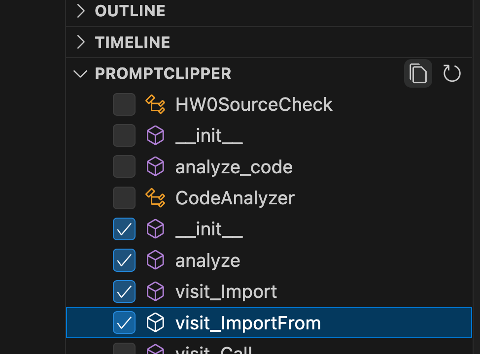
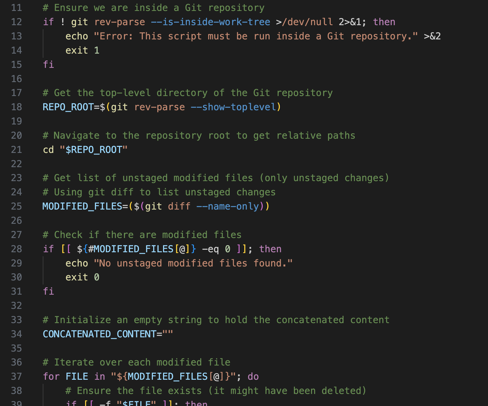
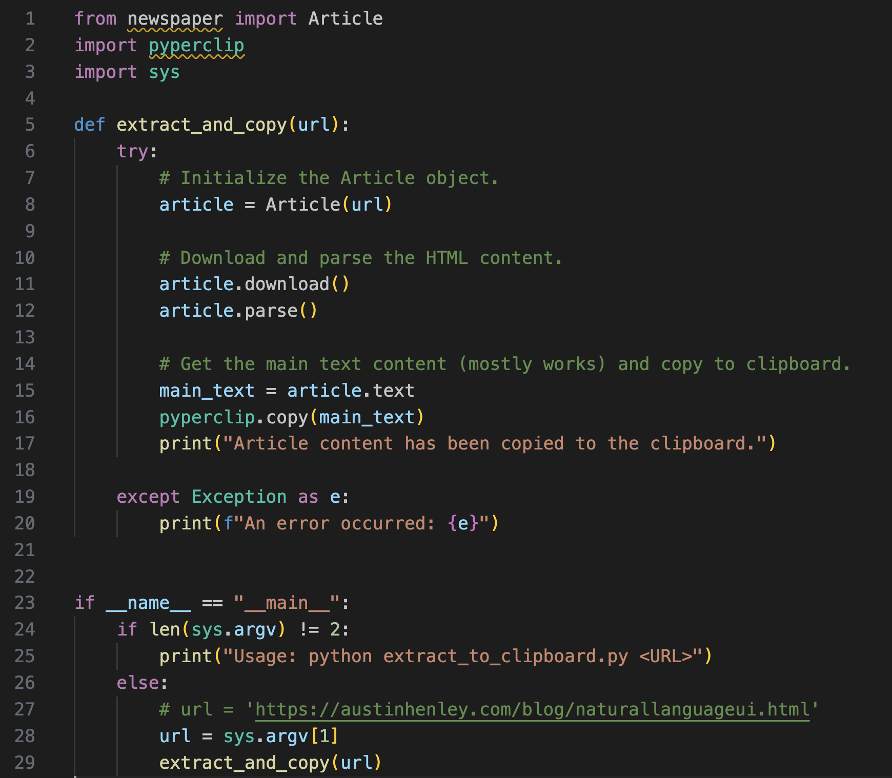
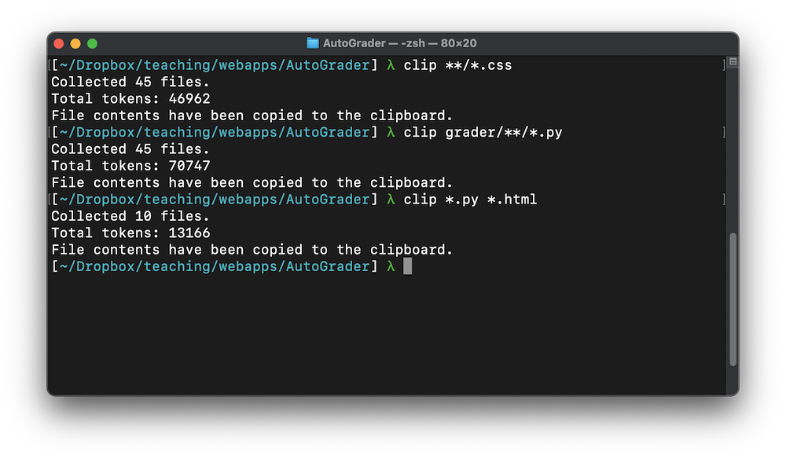

Associate Teaching Professor
Carnegie Mellon University
I use ChatGPT and Claude a lot.
But it is frustrating gathering context for big tasks. Navigating to and copying the code, data, and documentation so that I can paste it into the chat interface is not ideal.
Cursor and Copilot's chat features have better integration with codebases, but they don't let me control the context. From my quick tests, I get better results still by using ChatGPT or Claude directly (though it takes more effort).
Besides, I am often putting together context from a variety of sources (multiple repositories, web pages, images, logs, databases, etc.).
So, time to build my own tooling!
I've been iterating on a handful of small scripts that pipe information to my clipboard:
My first (naive) attempt was to make a VS Code extension that lets me select which functions, methods, or classes I want to copy to my clipboard.
However, it is fairly tedious to pick and choose which functions to copy each time. I use Promptclipper occasionally, but we can do better. The source is available on GitHub.
Given that prompt windows are quite large, we can paste entire code files without a problem.
I wrote a zsh script for identifying the modified files in my current git repository, concatenating their contents, and placing it all in the clipboard.
This is handy! The source is available on GitHub.
Sometimes I will go to a webpage, press CTRL-A (select all), and paste it into my prompt. The formatting is terrible but ChatGPT and Claude seem unbothered.
I made a Python script using the newspaper3k library to extract the main content from a page, while ignoring the HTML, headers, advertisements, and navigation bars. It eliminates a lot of unnecessary data, though it isn't perfect.
I haven't found this useful as a standalone tool. Instead I've called it from other scripts. The source is available on GitHub.
The pbcopy command-line tool is powerful. I can concatenate code files then pipe the result so it is all copied to my clipboard with:
cat foo.py bar.py | pbcopy
Or if I want to recursively concatenate all Python files in my repository:
cat **/*.py | pbcopy
I made a script that uses the find command to fetch all code files recursively in a directory (you can add whatever file extensions you might need).
extensions=("*.c" "*.cpp" "*.py" "*.js" "*.ts" "*.java" "*.go" "*.rb" "*.php" "*.swift")
find_command="find . -type f \\("
for ext in "${extensions[@]}"; do
find_command+="-name \"$ext\" -o "
done
find_command="${find_command::-4}\\)"
eval "$find_command -exec cat {} + | pbcopy"
Now I can claim this a one-liner by running all-code-clipper. The source is available on GitHub. I was going to package all of these scripts up into a single tool where I can pipe things together, but...
It turns out that John Lam has already made a much nicer tool: clip. It lets you use glob patterns to select files, concatenates them all together, appends the filename to each file, and stores it to your clipboard (or to a file).
A few examples:
clip *.html *.css
clip **/*.py
clip > saved_clipboard.txt
A must-have tool.
I've started keeping project-specific clip scripts to gather relevant groups of files that I need repeatedly (e.g., all the files for my web app's front-end or related to authentication).
Eventually the UX of interacting with AI will catch up. We won't have manually gather context—we will be able to point, make vague associations, or say "like that website I went to this morning".
Until then...